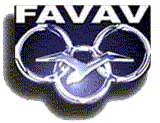
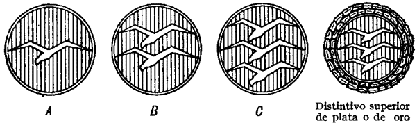

Manual del Vuelo a Vela
Wolf Hirth
1942
Las pruebas
por
GEORG BRÜTTING
En el concurso del Rhön de 1921 ya
se hizo notar la necesidad de fijar un mínimo de condiciones para pilotar aparatos,
lo cual se concretó en las condiciones que se fijaron después para las pruebas. En 1925
se determinaron las condiciones que sirvieron en todas partes para las pruebas de los
títulos A y B de vuelos planeados y del título C de vuelo a vela, y desde entonces, en
todos los círculos interesados por el vuelo, se dio la bienvenida a los poseedores del
bello distintivo azul con las blancas gaviotas (véase fig. 95). En 1930 hubo ya un gran
número de distintivos de la clase C. Luego se añadió al distintivo C el reborde de
plata; la « Comisión internacional de estudios de vuelo a vela » instituyó el
distintivo C de plata para el que hubiese realizado un vuelo de cinco horas, un vuelo de
distancia de 50 km. y un vuelo de altura de 1000 m. sobre el punto de salida, siendo Wolf
Hirth y Robert Krondfel los primeros que ostentaron ese distintivo. Hoy son portadores de
ese distintivo centenares de pilotos de todos los países.

Fig. 95. Los distintivos de pilotos de planeador y de velero: gaviotas blancas sobre fondo azul. Los distintivos superiores tienen una corona de hojas de roble de plata o de oro
En 1937 la « Istus » colmó los
deseos de muchos pilotos de concurso creando el « distintivo de oro » para un vuelo de
300 km. y una altura, sobre el punto de salida, de 3000 m.
En 1.º de enero de 1935
quedaron anuladas las condiciones vigentes entonces para los títulos A, B y C, y fueron
sustituidas por las siguientes:
Titulo A de vuelo planeado
I.
EXAMEN TEÓRICO.
a)
Construcción de planeadores y veleros.
b)
Reconocimiento y conservación de
aparatos de vuelo y accesorios.
II.
Cinco vuelos de prueba de
duración mínima de 20 segundos, realizados sin defecto y en línea recta. Los
aterrizajes habrán de hacerse dentro de una faja de terreno, marcada en el suelo por el
profesor, de 20 m. de anchura.
Un vuelo de prueba de 20
segundos de duración mínima, realizado sin defecto y en línea recta, ejecutando
correctamente el aterrizaje dentro de una faja de terreno de 20 m. de anchura marcada por
el profesor. Los seis aterrizajes deberán ser hechos sin daño para el aparato y con
velocidad mínima, del tipo de los llamados aterrizajes de cola.
Entre estos vuelos pueden
hacerse otros que no se consideren como de prueba.
Pueden autorizar estas pruebas
del titulo A: Profesor superior de vuelo a vela; profesor de vuelo a vela; profesores de
l.ª y de 2.ª de vuelos planeados.
(Puesto que se habla aquí de
profesores de vuelo, se considera oportuno completar el texto dando a conocer sus
distintas clases.
Desde el 1.º de marzo de 1935
rigen las siguientes categorías de profesores de vuelo sin motor:
a)
Profesor superior de vuelo a vela.
b)
Profesor de vuelo a vela.
c)
Profesor de 1.ª de vuelos
planeados.
d)
Profesor de 2.ª de vuelos
planeados.
e)
Monitores.
a) Están facultados para toda
clase de enseñanza de vuelo sin motor en planeador y en velero, empleando cualquier
método de envuelo; vuelos de prueba de planeadores y veleros; pruebas teóricas para los
títulos oficiales de piloto de velero; aceptación de los jefes de vuelo en las escuelas;
dictaminar sobre terrenos de escuela y hacer sus ensayos.
b) Están facultados para
enseñanza de planeo y vuelo a vela, incluso el título oficial de piloto de velero,
empleando el envuelo por tirantes y remolque por torno o automóvil; para autorizar los
títulos A y B de planeador y C de vuelo a vela; para las pruebas
oficiales de piloto de velero; para aceptación de Jefes de vuelo; para dictaminar sobre
terrenos de escuela de planeo y ensayarlos.
c) Enseñanza de vuelos
planeados hasta presenciar las pruebas del B, empleando el envuelo por tirantes y
remolque con torno o automóvil.
d) Enseñanza de vuelos
planeados hasta las pruebas del A, empleando solamente envuelo por tirantes.
e) Enseñanza de
vuelos planeados y a vela, siempre bajo las órdenes de un profesor superior u ordinario
de vuelo a vela.
Las Condiciones necesarias para llegar a ser profesor de
las distintas clases son:
a) Poseer todos los títulos oficiales de piloto de
velero, incluso autorización para vuelo remolcado y dominar todos los métodos de
envuelo; poseer el titulo A de piloto de motor y el título A de conductor de
automóvil; poseer la autorización oficial para examinar pilotos de velero; tener por lo
menos 21 años de edad y haber seguido los cursos de profesor de vuelo a vela en alguna de
las escuelas especiales.
b) Análogo al anterior, salvo no ser necesarios el
título de piloto de motor y el remolque por avión.
c) Tener el titulo C y dominar el envuelo por tirantes y
remolque por torno y automóvil; ser conductor de automóvil (clase A); haber hecho un
curso en una escuela especial.
d) Poseer el título B y dominar el envuelo por tirantes;
haber hecho un curso adecuado en una escuela o grupo deportivo; tener 18 años de edad.
e) Tener el título B.
Se exige también a todos condiciones pedagógicas y de carácter.
Los títulos están expedidos en Alemania en tarjetas de
los siguientes colores:
a) rojo; b) verde; c) azul; d) gris; e) blanco.
Todas, excepto la ultima, llevan la fotografía del
interesado. - N. del T.)
Título B de vuelo planeado
I. EXAMEN
TEÓRICO.
a) Equipo de
planeadores y veleros.
b) Nociones
elementales de meteorología.
II. EXAMEN DE VUELO.
a) Con envuelo
por tirantes.
Cinco
vuelos de prueba de 60 segundos de duración mínima. Los vuelos serán en forma de S en
proyección horizontal. Cada vuelo tendrá una virada a la derecha y otra a la izquierda
de 90º por lo menos. Las viradas se harán sobre puntos marcados previamente por el
profesor. Los cinco aterrizajes deben hacerse con la velocidad mínima, de los llamados
aterrizajes de cola y precisamente dentro de un rectángulo de 50 x 150 m. y sin producir
daños al aparato. En el aterrizaje deberá quedar el aparato, todo lo más, a 50 m. de
la señal marcada, midiéndose la distancia desde el gancho de envolar del planeador hasta
la banderola puesta o señal hecha en el centro del rectángulo. -
b) Con envuelo por auto o torno.
Cinco vuelos de prueba de 60
segundos de duración mínima. En cada vuelo se describirá un circulo completo alrededor
de una señal puesta previamente por el profesor, debiendo ser las viradas dos a la
izquierda y tres a la derecha. Los cinco aterrizajes se harán sobre terreno fijado de
antemano y ejecutados con velocidad mínima, de los llamados de cola, sin daño del
aparato y dentro de un círculo de 50 m. de radio. La distancia se medirá desde el gancho
de envolar del aparato al centro del circulo marcado.
Las curvas que se piden deberán ser voladas con la inclinación transversal debida. Las
viradas con derrape, o con contramando transversal o de gran radio, no se considerarán
como viradas.
Los cinco vuelos de prueba para el titulo B de planeador
pueden hacerse en parte con envuelo por tirantes y en parte con envuelo por torno o motor.
Pueden autorizar las pruebas para el titulo B: profesor
superior de vuelo a vela; profesor de vuelo a vela y profesor de l.ª de vuelo planeado.
Titulo C de vuelo a vela
I. EXAMEN
TEÓRICO.
a) Nociones
elementales sobre la teoría del vuelo.
b) Conducta que
debe seguirse en casos especiales.
c) Meteorología
para pilotos de velero.
d) Empleo y
conservación del paracaídas.
II. Un vuelo
de prueba ejecutado a vela, de 5 minutos de duración mínima, en el que se haya podido
observar claramente que no ha habido pérdida de altura. El aterrizaje ha de ser sin
daños. En las pruebas para el título C hechas con envuelo por remolque con auto, torno o
avión, se deberá llevar un barógrafo, para atestiguar con barograma la conservación de
la altura, ya que esta circunstancia no se puede observar desde tierra, como sucede en
el vuelo en ladera.
Para el caso de remolque por torno se aplicarán, además,
estas nuevas condiciones:
Cinco vuelos condicionales de 2 minutos de duración
mínima, haciendo en cada vuelo una virada a la izquierda y otra a la derecha, con
inclinación transversal de 30º, o dos viradas completas a derecha e izquierda, con 180º
de variación de dirección de vuelo. Además, tres vuelos de prueba como los anteriores,
con aterrizaje sobre un campo fijado de 50 a 200 m.
Los cinco primeros vuelos condicionales pueden hacerse con
planeador o velero de entrenamiento; los vuelos de prueba, precisamente, en estos
últimos aparatos.
Pueden autorizar el título C: profesor superior de vuelo
a vela; profesor de vuelo a vela.
Títulos superiores
Para
obtener el distintivo de plata se exige:
1.º Un vuelo de 5 horas de
duración, con regreso al punto de salida.
2.º Un vuelo de distancia
de más de 50 km., medidos en línea recta desde el punto de salida hasta el de
aterrizaje.
3.º Un vuelo de altura
ganando 1000 m. sobre el punto
de salida.
El vuelo
de altura puede estar combinado con el de duración o el de distancia. Si el envuelo es
por remolque con avión o torno, la altura de 1000 m. se contará sobre el punto de
desembrague. La condición de altura puede cumplirse también si los 1000 m. se obtienen
ganando altura sobre otro punto más bajo que el de partida sobre el cual se hubiese
volado.
Para el vuelo de duración hay que proveerse de un
certificado autorizado por personas que ostenten cargos deportivos u oficiales, tales como
empleados de Aviación, en el cual constará de modo explicito la duración del vuelo,
el nombre del piloto y el día en que se ha realizado el vuelo.
Para el vuelo de altura hay que presentar el
barograma certificado como antes o por autoridades deportivas o por autoridades oficiales
de Aviación, debiendo constar en el barograma el nombre del piloto y el día del vuelo;
además, el número del barógrafo. Hay que especificar el modo de envolar con el que se
ha emprendido el vuelo; si ha sido por tirantes, constará la altitud del punto de salida.
Si ha sido remolcado por avión o por torno, se deberá poder hacer notar en el barograma
el momento del desembrague. Si esto no es posible y, por ejemplo, el piloto del velero se
ha soltado en una ascendencia y su velocidad ascensional no se modificó después de
desembragar, podrá bastar un testimonio del piloto del avión, en el que conste la
altitud en el momento del desembrague. Sea cualquiera el género de en-vuelo empleado,
convendrá hacer constar la presión atmosférica en el lugar y momento de envolar.
También se exige la curva de calibrado del barógrafo, con el fin de poder hacer la
debida interpretación del barograma. En muchos casos no se ha podido hacer la propuesta
de distintivo por faltar la curva de calibrado y no poderse hacer debidamente esa
interpretación. La curva de calibrado no puede ser sustituida por un certificado de la
policía aérea sobre la altura alcanzada. Naturalmente que tal curva deberá ser de fecha
reciente y si no se dispone de ella o hay dificultades para obtenerla, el aspirante al
título no le queda otro remedio que mandar hacer otra curva de calibrado y enviar
después, con ésta, el barograma del vuelo.
Para el vuelo de distancia hace falta un
certificado que acredite el punto de salida y la hora de la misma, así como el punto de
aterrizaje, con hora y fecha, certificado autorizado como los anteriormente citados. Si
se aterriza en un lugar solitario, se acudirá al puesto de la Guardia civil o al alcalde
más próximo. Si es posible, conviene también acompañar, en este caso, el barograma
del vuelo.
Para el distintivo de oro es preciso:
1.º Poseer el de plata.
2.º Un vuelo de distancia
de más de 300 km.
3.º Un vuelo de altura con
3000 m. sobre el punto de salida.
Las
propuestas de concesión de distintivo de oro deberán ser enviadas con toda la
documentación precisa a la:
Comisión Internacional del vuelo sin motor, Aeropuerto de
Darmstadt.
A la documentación hay que acompañar un envío de 3
marcos como importe de gastos.
Para los pilotos no alemanes (en caso excepcional,
también los alemanes) puede hacerse el envío a la citada Comisión, por conducto del
Aero Club. En este caso basta acompañar, en lugar de la documentación citada, un
certificado del Aero Club, si está reconocido por la F.A.I., en el que conste el
cumplimiento de las condiciones. En este caso, el Aero Club asume toda la responsabilidad
de las pruebas, para lo cual, según las prescripciones de la F.A.I., el citado Aero Club
habrá reunido toda la documentación necesaria.
Los títulos A, B y C son concedidos en cada país por las
Asociaciones reconocidas y llevarán una letra como indicativo del país expedido; así
Inglaterra una G (Gran Bretaña), Italia una I. Solamente Alemania tiene el privilegio,
como país fundador, de que los distintivos lleven únicamente las gaviotas sin aditamento
alguno.
Los distintivos superiores son internacionales y por eso
son sólo concedidos por la Istus (Int. Studíenkommission fur den motorlosen Flug: Comisión Internacional para el estudio del
vuelo sin motor). Por lo tanto, todos son iguales y solamente tienen por el reverso un número
que es el de orden dado por la citada Comisión.
Además de estas pruebas y distintivos hay, en cada país, las llamadas pruebas y
certificados oficiales. En Alemania hay:
Certificado de piloto de velero (llamado, contra
toda lógica, título «
C oficial »).
Este certificado lo autoriza la Aviación Oficial y
concede al poseedor la facultad de utilizar los terrenos dedicados a vuelo a vela y los
aeródromos (por ejemplo, para vuelos de distancia), así como las exhibiciones públicas.
Este certificado tiene 3 grados:
a) Simple
autorización.
b) Autorización
para vuelo remolcado, como piloto de velero.
c) Autorización
para vuelo acrobático en exhibiciones públicas. Las pruebas que deben efectuar los
solicitantes de esos certificados, comprenden:
1. Examen
teórico oral acerca de:
a)
Nociones fundamentales sobre la teoría del vuelo a vela, incluyendo el modo de apreciar
la seguridad de los aparatos.
b)
Conducta que se debe seguir durante el vuelo.
c) Las
corrientes aéreas y su acción sobre el vuelo a vela.
d) Las
disposiciones oficiales sobre el tráfico aéreo.
2. La
parte práctica consiste en cinco vuelos que sumen, en total, 60 minutos de duración sin
daño del aparato; en cada vuelo se habrá de permanecer 5 minutos por lo menos volando
sobre el punto de salida. (Ha dejado de exigirse la condición, que antes se pedía, de
aterrizaje sobre lugar prefijado.)
El certificado tiene normalmente una validez de dos años
y debe renovarse antes de expirar este plazo para comprobar la permanencia, en actividad
de vuelo, del poseedor del mismo.
Con objeto de obtener autorización para Vuelo
remolcado con avión, el solicitante debe:
1.º
Poseer
la autorización simple.
2.º
Realizar
cinco vuelos correctos a remolque en distintas situaciones meteorológicas.
3.º
Hacer,
ante persona que ostente cargo oficial en Aviación, tres vuelos de prueba remolcado por
avión.
Para
autorizar estas pruebas hay profesores superiores de vuelo a vela, nombrados oficialmente.
Análogas prescripciones existen para la autorización de
acrobacias, y para saber exactamente lo dispuesto oficialmente sobre este particular
basta dirigirse a las oficinas del Estado, en donde los empleados a su cargo informarán
sobre las disposiciones que existen y modificaciones que hayan podido producirse en el
transcurso del tiempo.
(Mientras se realiza la impresión de esta obra están en
preparación nuevas normas para la obtención de títulos de pilotos de vuelo sin motor,
que serán puestas en vigor en breve plazo por las Autoridades de Aviación. Estas
nuevas normas afectan más principalmente al título C, para el que se da una
importancia fundamental a ejecutar correctamente la virada y pierde, en cambio,
importancia la circunstancia de permanencia en el aire de modo continuo durante un
determinado tiempo. Se tiende a buscar con las nuevas normas el predominio de la habilidad
maniobrera.- N. del T.)